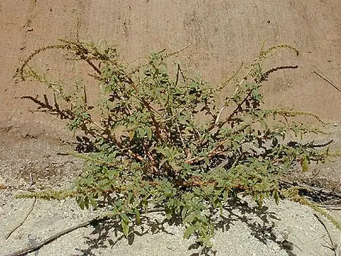

Spiny amaranth
Spiny amaranth is a wild green you can forage from June to October in South India, West coast and Deccan, Central forests, East, Northern plains, Northeast and Thar and dry northwest. Amaranth with sharp paired spines at each leaf base. Common on roadsides and waste ground.

When is spiny amaranth in season in India?
Spiny amaranth is usually in season June to October. Timing shifts with weather, latitude and altitude.
Where does spiny amaranth grow in India?
Spiny amaranth grows in Andaman and Nicobar Islands, Andhra Pradesh, Arunachal Pradesh, Assam, Bihar, Chandigarh, Chhattisgarh, Dadra and Nagar Haveli and Daman and Diu, Delhi, Goa, Gujarat, Haryana, Jharkhand, Karnataka, Kerala, Lakshadweep, Madhya Pradesh, Maharashtra, Manipur, Meghalaya, Mizoram, Nagaland, Odisha, Puducherry, Punjab, Rajasthan, Sikkim, Tamil Nadu, Telangana, Tripura, Uttar Pradesh, Uttarakhand, West Bengal. Regions: South India, West coast and Deccan, Central forests, East, Northern plains, Northeast, Thar and dry northwest.
How do you recognise spiny amaranth?
Amaranth with sharp paired spines at each leaf base. Common on roadsides and waste ground.
How do you harvest spiny amaranth?
Pinch off the young tips and top leaves with your fingers or scissors. Leave the lower leaves and roots so the plant regrows. Pick in the morning, away from roads and drains.
How do you eat spiny amaranth?
Young leaves cooked like spinach.
How do you store spiny amaranth?
Shade-dry.
What is spiny amaranth good for?
Iron & calcium, Vitamin A, Vitamin C.